<!DOCTYPE html>
<html lang="en">
  <head>
    <meta charset="utf-8" />
    <meta name="viewport" content="width=device-width, initial-scale=1.0, maximum-scale=1.0, user-scalable=no" />

    <title>QGIS & PostGIS Trucs & Astuces</title>
    <link rel="shortcut icon" href="./favicon.ico" />
    <link rel="stylesheet" href="./dist/reset.css" />
    <link rel="stylesheet" href="./dist/reveal.css" />
    <link rel="stylesheet" href="./dist/theme/black.css" id="theme" />
    <link rel="stylesheet" href="./css/highlight/base16/zenburn.css" />

    <link rel="stylesheet" href="./css/oslandia.css" />

  </head>
  <body>
    <div class="reveal">
      <div class="slides"><section  data-markdown><script type="text/template">

<style>
img {
margin:0 !important;
vertical-align:top !important;
}
table td {
border-bottom: 0 !important;
padding-left: 0 !important;
vertical-align:top !important;
}
</style>


# PostGIS & QGIS 

### Trucs & Astuces

Rencontres des Utilisateurs Francophones de QGIS<br/>
Clermont-Ferrand - 13/03/2023
</td><td></img></td>

Julien Cabieces / Julien Moura


</script></section><section  data-markdown><script type="text/template">
### Qui sommes nous ?

<table vertical-align="middle">
<tr><td></td>
<td>
Julien Cabieces<br/>
Developpeur C++/Python<br/>
QGIS Core committer<br/>
<em>@troopa81</em><br/>
<em>@CabiecesJ</em><br/>
<em>@CabiecesJ@mapstodon.space</em>
</td>
</tr>
</table>

<table vertical-align="middle">
<tr>
<td>
Julien Moura<br/>
Developpeur Python<br/>
Pigiste @ GeoTribu<br/>
<em>@geojulien</em><br/>
<em>@geojulien@mapstodon.space</em>
</ul>
</td>
<td></td>
</tr>
</table>
</script></section><section  data-markdown><script type="text/template">
## Cet atelier présente...

- Les relations
- PostgreSQL Notify
- Traitement vers la base de données
- Gérer la base de données depuis l'explorateur
- Sauver un projet en base de données
- Log SQL
</script></section><section  data-markdown><script type="text/template">
## Relations
</script></section><section  data-markdown><script type="text/template">

### Cas d'utilisation

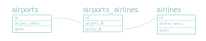

* **NM Relation**
* Les aéroports ont des companies aériennes...
* et les companies aériennes ont des aéroports

* Voir [QGIS doc](https://docs.qgis.org/3.16/en/docs/user_manual/working_with_vector/attribute_table.html#introducing-many-to-many-n-m-relations) pour plus d'informations
</script></section><section  data-markdown><script type="text/template">
### Initialiser le modele de données

Créer la base

```shell
createdb pgqgis_tips
```

Vérifier que l'on peut s'y connecter

```shell
psql pgqgis_tips
```

Récupérer le fichier [airports.sql](airports.sql) et chargez le

```shell
psql pgqgis_tips -f airports.sql
```
</script></section><section  data-markdown><script type="text/template">
### 👀 Jetons un oeil au modèle de données


</script></section><section  data-markdown><script type="text/template">
### Et maintenant dans QGIS ...

- On crée la connexion : *Explorateur > PostgreSQL > Nouvelle connexion...*
  - Nom: pgqgis_tips
  - Hôte: 127.0.0.1
  - port: 5432
  - Base de données: pgqgis_tips
  - **Authentification si pas en trust sur connexion locale**
  - ⚠️Cocher *Lister les tables sans géométries*
  
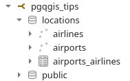
</script></section><section  data-markdown><script type="text/template">
### Et initialiser le projet ...

- Selectionner les 3 tables
- Puis *Ajouter les tables sélectionnées au projet*
- **BONUS** Ajouter une couche OpenStreetMap
  - et changer le CRS du projet : **3857**</script></section><section  data-markdown><script type="text/template">
### Découvrir les relations

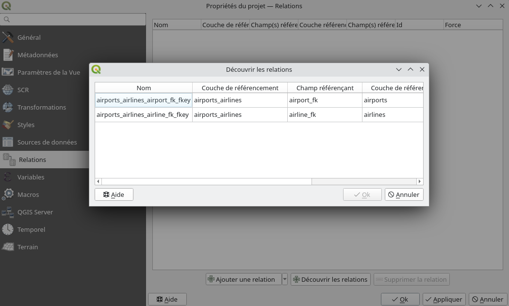

* *Projet > Propriétés > Relations*
* *Découvrir les relations*
* *Tout selectionner > OK*
</script></section><section  data-markdown><script type="text/template">
### Ouvrir formulaire airports/airlines

Qu'observez-vous ?
</script></section><section  data-markdown><script type="text/template">
### Configurer formulaire airports

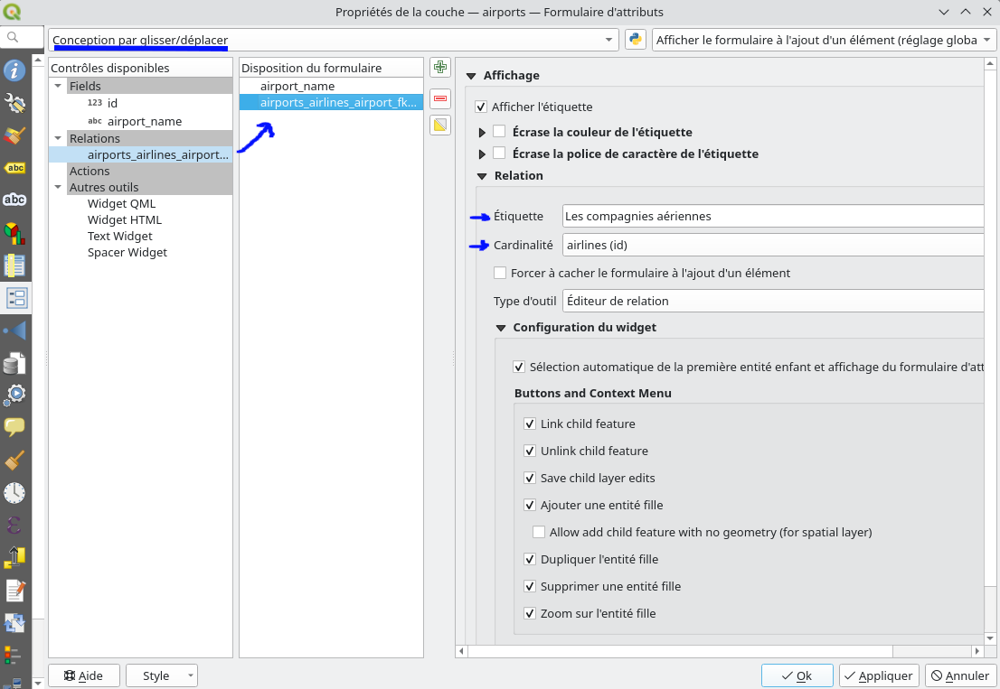
</script></section><section  data-markdown><script type="text/template">
### Ajouter une compagnie

Essayer d'ajouter KLM (à Amsterdam) depuis le formulaire enfant de l'aéroport Toulouse

Qu'observez-vous?
</script></section><section  data-markdown><script type="text/template">
### Ajouter une compagnie

- La couche airports_airlines est passé en édition aussi
  - Pas dans toutes les versions de QGIS
  - Fonctionne uniquement depuis le formulaire
- Impossible de faire le lien avec `nextval('locations.airports_airlines_id_seq'::regclass)`

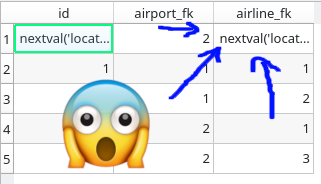
</script></section><section  data-markdown><script type="text/template">

### Evaluer les clés primaires


* Relations ont besoin de PK valides, pas temporaire
  * i.e. *nextval('locations.airports_id_seq'::regclass)*
* ⚠️Pas suffisant...
  * On veut éditer toutes les couches de données liées
  * Sauver dans le bon ordre (référencées en premier!)
  * Et si y a des erreurs!
</script></section><section  data-markdown><script type="text/template">

### Groupe de transaction automatique

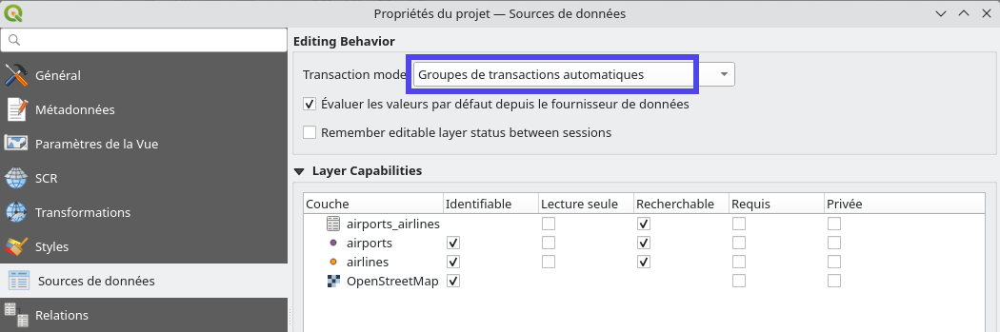
</script></section><section  data-markdown><script type="text/template">
### Re-Ajouter une compagnie

Re-Essayer d'ajouter KLM (à Amsterdam) depuis le formulaire enfant de l'aéroport Toulouse

⚠️**NE PAS SAUVEGARDER**⚠️

Qu'observez-vous?
</script></section><section  data-markdown><script type="text/template">
### Re-Ajouter une compagnie

Depuis une console psql

```shell
pgqgis_tips=# select * from locations.airlines;
```

Qu'observez vous?

Puis relancer la même requête aprés sauvegarde.
</script></section><section  data-markdown><script type="text/template">
### Modifier un aéroport

- Modifier le nom de l'aéroport Toulouse Blagnac
- ⚠️**NE PAS SAUVEGARDER**⚠️
- Depuis une console psql

```shell
pgqgis_tips=# update locations.airports set airport_name = 'Toulouse or not to lose!' where id = 1;
```

Qu'observez vous?

Puis sauvegardez.
</script></section><section  data-markdown><script type="text/template">
### Groupe de transaction automatique

* Ouvre une transaction en base ➡ Fermée lors de la sauvegarde
* TOUTES les couches de données éditées en même temps
* 👍 Evalue les triggers 
* 👎 Transaction longue ➡ [Problèmes](https://github.com/qgis/QGIS-Enhancement-Proposals/issues/203)
  * Verrouillage sur les lignes modifiées ➡ bloque les autres transactions

<!-- on rows modifications even if it's not the same field and deletion. 
If you modify an already transaction modified row, QGIS will block (but there is a timeout), with no warning
insert is OK (but maybe index is not updated 
-->
</script></section><section  data-markdown><script type="text/template">
### Groupe de transactions mises en mémoire tampon  ⭐ Nouveau en 3.26 ⭐

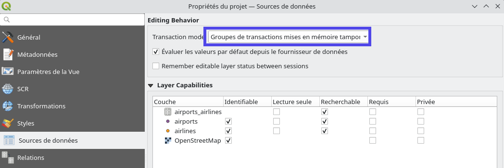
</script></section><section  data-markdown><script type="text/template">
### On y retourne...


</script></section><section  data-markdown><script type="text/template">
### Re-Re-Ajouter une compagnie

Re-Re-Essayer d'ajouter Turkish Airlines (à Istanbul) depuis le formulaire enfant de l'aéroport de Lyon

⚠️**NE PAS SAUVEGARDER**⚠️

Qu'observez-vous?
</script></section><section  data-markdown><script type="text/template">
### Re-Re-Ajouter une compagnie

Depuis une console psql

```shell
pgqgis_tips=# select * from locations.airlines;
```

Qu'observez vous?

Puis relancer la même requête aprés sauvegarde.
</script></section><section  data-markdown><script type="text/template">
### Re-Modifier un aéroport

- Re-Modifier le nom de l'aéroport Toulouse Blagnac
- ⚠️**NE PAS SAUVEGARDER**⚠️
- Depuis une console psql

```shell
pgqgis_tips=# update locations.airports set airport_name = 'Toulouse or not to lose!' where id = 1;
```

Qu'observez vous?

Puis sauvegardez.
</script></section><section  data-markdown><script type="text/template">
### Groupe de transactions mises en mémoire tampon

* Toutes les modifications mises en tampons ➡ rejouées lors de la sauvegarde
  * Dans le bon ordre
  * Dans une seule transaction
* 👎 Pas d'évaluation des triggers *live* (fait lors de la sauvegarde)
* Le dernier qui sauve a gagné!
</script></section><section  data-markdown><script type="text/template">
## PostgreSQL Notify

* Déclencher un rafraichissement de la donnée sur un "évènement" PostgreSQL
* Insert, Update, Delete, ...
</script></section><section  data-markdown><script type="text/template">
### Créer un aéroport depuis la base

à Nantes!

```shell
pgqgis_tips=# insert into locations.airports (airport_name, geom) values( 'Nantes', st_geomfromtext('POINT(-1.5546 47.2191)', 4326));
```

ou supprimer

```shell
delete from locations.airports where id = 6
```

Rien ne se passe: on doit rafraichir ou se déplacer dans la carte!
</script></section><section  data-markdown><script type="text/template">
### PostgreSQL configuration

```sql
CREATE FUNCTION notify_modified_airports() RETURNS trigger
LANGUAGE plpgsql
AS $$ 
BEGIN 
NOTIFY qgis, 'airports_modified';
RETURN NULL;
END; 
$$;


CREATE TRIGGER notify_modified_airports 
AFTER INSERT OR UPDATE OR DELETE OR TRUNCATE ON locations.airports
FOR EACH STATEMENT EXECUTE PROCEDURE notify_modified_airports();
```
</script></section><section  data-markdown><script type="text/template">
### QGIS configuration

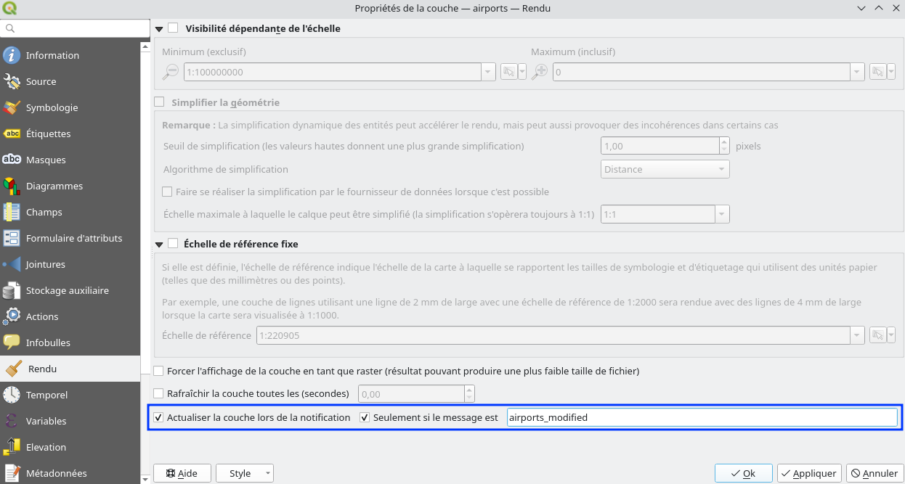</img>
</script></section><section  data-markdown><script type="text/template">
### Modifier la base

QGIS se met à jour tout seul!
</script></section><section  data-markdown><script type="text/template">
### Pas seulement pour le rafraichissement

- **Comment ?** Avec un peu de magie Python 🪄
- **Ou ?** Plugin / Script de démarrage / Macros / console Python
- **Pour faire quoi ?** ✨ Ce que vous voulez !!!*

Par exemple: depuis la console Python (*Extensions > Console Python*)
```python
def onNotify():
   iface.messageBar().pushInfo("Notification", "Les aéroports ont été modifiés 😱 !!")

iface.activeLayer().dataProvider().notify.connect(onNotify)
```

<small>*Dans les limites de ce que propose l'API QGIS</small>
</script></section><section  data-markdown><script type="text/template">
### 📝 Exercice 

Ajouter une anotation pour chaque nouvelle compagnie aérienne

</script></section><section  data-markdown><script type="text/template">
### Réponse

Envoie l'id de la nouvelle ligne...

```sql
CREATE FUNCTION notify_new_airlines() RETURNS trigger
LANGUAGE plpgsql
AS $$
DECLARE
  v_txt text;
BEGIN
  v_txt := format('new_airlines %s', NEW.id);
PERFORM pg_notify('qgis', v_txt);
RETURN NULL;
END; 
$$;


CREATE TRIGGER notify_modified_airports 
AFTER INSERT ON locations.airlines
FOR EACH ROW EXECUTE PROCEDURE notify_new_airlines();
```

Pour chaque ligne
</script></section><section  data-markdown><script type="text/template">
### Réponse

Un petit peu de Python et d'API QGIS


```python
def createAnnotationOnNotify(msg):
    id = int(msg[13:len(msg)])
    airlines = QgsProject.instance().mapLayersByName("airlines")[0]
    new_feat = airlines.getFeature(id)
    
    annotation = QgsTextAnnotation()
    annotation.setDocument(QTextDocument("✨✨Nouvelle compagnie {} ici !! ✈✈ ".format(new_feat["airline_name"])))
    annotation.setMapPosition(new_feat.geometry().asPoint())
    annotation.setMapPositionCrs(airlines.sourceCrs())
    annotation.setFrameSizeMm(QSizeF(50,25))

    QgsProject.instance().annotationManager().addAnnotation( annotation );
    
QgsProject.instance().mapLayersByName("airlines")[0].dataProvider().notify.connect(createAnnotationOnNotify)
```
</script></section><section  data-markdown><script type="text/template">
### Réponse

et c'est bon

```sql
pgqgis_tips=# insert into locations.airlines (airline_name, geom) values( 'Iberia', st_geomfromtext('POINT(2.1512 41.3894)', 4326));
```


</script></section><section  data-markdown><script type="text/template">
### Rafraichir les autres couches ?

- **Cas d'utilisation** : 
  - Gérer 1 réseau de noeuds et lignes
  - Rafraichir les noeuds en fonction de lignes qui s'intersectent en utilisant des triggers
- **NON !!** : Préférer les [dépendances de données](https://oslandia.com/en/2020/01/10/en-qgis-snapping-improvements)

</img>

</script></section><section  data-markdown><script type="text/template">
## Traitement vers la base de données

Envoyer la sortie d'un traitement directement en base de données
</script></section><section  data-markdown><script type="text/template">
### Générer les polygones de Voronoï...

... sur les compagnies aériennes, directement en base

<small>Pourquoi? Je sais pas mais c'est joli🌺🌸</small>
</script></section><section  data-markdown><script type="text/template">
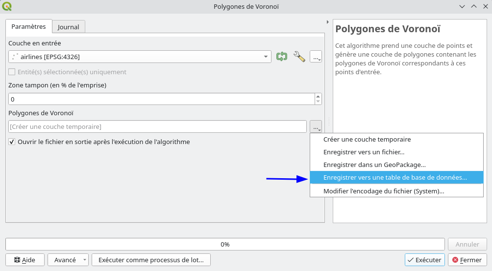
</script></section><section  data-markdown><script type="text/template">

</script></section><section  data-markdown><script type="text/template">
### Vérification en base


```shell
pgqgis_tips=# \d locations.voronoi
                           Table « locations.voronoi »
   Colonne    |          Type          | Collationnement | NULL-able | Par défaut 
--------------+------------------------+-----------------+-----------+------------
 id           | integer                |                 | not null  | 
 geom         | geometry(Polygon,4326) |                 |           | 
 airline_name | character varying      |                 |           | 
Index :
    "voronoi_pkey" PRIMARY KEY, btree (id)

pgqgis_tips=# select count(*) from locations.voronoi;
 count 
-------
     8
(1 ligne)

```
</script></section><section  data-markdown><script type="text/template">

## Gérer la base depuis l'explorateur

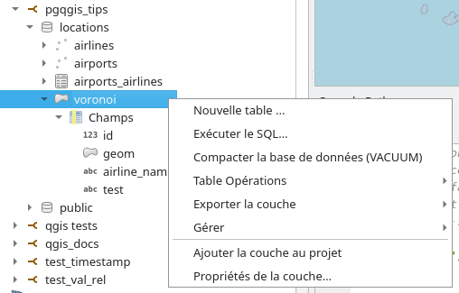</img>
</script></section><section  data-markdown><script type="text/template">
### 📝 Exercice 

- Ajouter un champs texte à la table voronoi
- Supprimer ce champs
- Exécuter un requête pour récupérer les 2 premières compagnies aériennes
- ... Et la visualiser dans QGIS
- Exporter la table voronoi dans un fichier GeoPackage
- Supprimer la table voronoi
- Créer une table / un schéma

**Et vérifier ce qui se passe en base**
</script></section><section  data-markdown><script type="text/template">
### Est-ce que ça remplace le DB Manager ?

* Oui ... mais [pas complètement](https://lists.osgeo.org/pipermail/qgis-developer/2022-June/064850.html)
* Certains fonctionnalités manquent
  * Créer/gérer des contraintes
  * Créer une vue depuis une requête
  * Modifier une colonne
  * Historisation de table (Quelqu'un utilise ça?!!) 
  * ...
</script></section><section  data-markdown><script type="text/template">
### DB Manager

* N'utilise pas l'API QGIS des fournisseurs de données
  * Complète duplication de code en Python
* Pas bien testé

**Préférer l'accés depuis l'explorateur chaque fois que c'est possible!**
</script></section><section  data-markdown><script type="text/template">
## Sauver le projet en base
</script></section><section  data-markdown><script type="text/template">
### Activer l'option

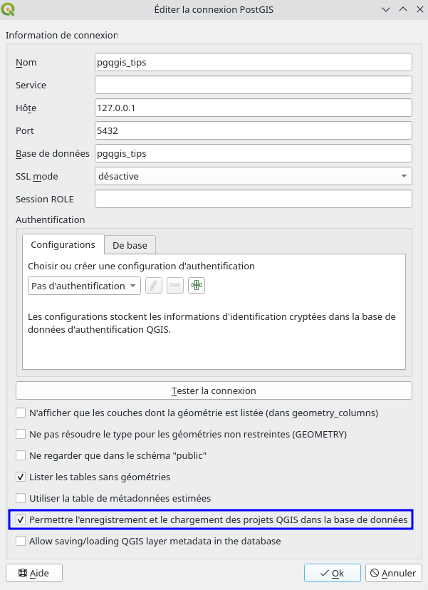</img>
</script></section><section  data-markdown><script type="text/template">
*Projet* > *Enregistrer sous* > *PostgreSQL...*

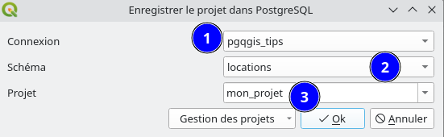</img>

*Projet* > *Ouvrir depuis* > *PostgreSQL...*
</script></section><section  data-markdown><script type="text/template">
### Vérification en base

```sql
pgqgis_tips=# \d locations.qgis_projects
              Table « locations.qgis_projects »
 Colonne  | Type  | Collationnement | NULL-able | Par défaut 
----------+-------+-----------------+-----------+------------
 name     | text  |                 | not null  | 
 metadata | jsonb |                 |           | 
 content  | bytea |                 |           | 
Index :
    "qgis_projects_pkey" PRIMARY KEY, btree (name)

pgqgis_tips=# select name, metadata from locations.qgis_projects ; 
    name    |                                       metadata                                       
------------+--------------------------------------------------------------------------------------
 mon_projet | {"last_modified_time": "2023-03-09 10:44:45.330186", "last_modified_user": "julien"}
(1 ligne)
```
</script></section><section  data-markdown><script type="text/template">
### Fichiers externes

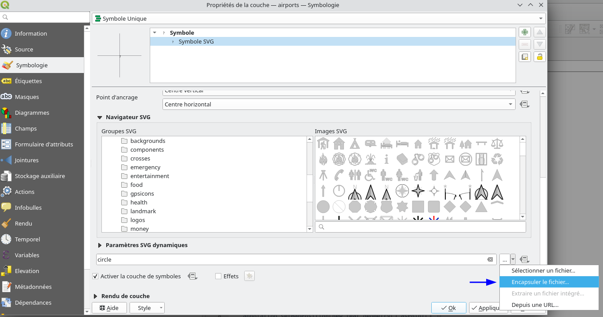</img>

Vous pouvez embarquer un fichier externe dans le projet (SVG par exemple) 
</script></section><section  data-markdown><script type="text/template">
## Log SQL ⭐ Nouveau en 3.26 ⭐

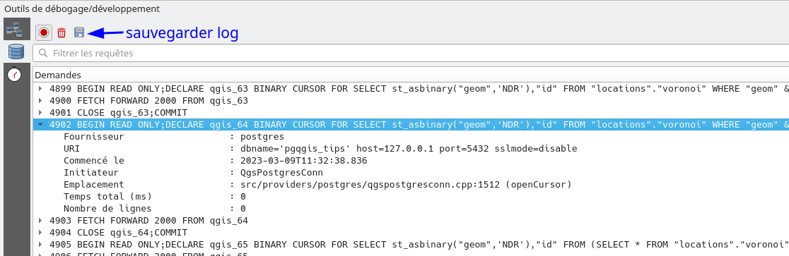</img>

- *Clic droit barre d'outils* > *Panneaux* > *Outils de debogage et développement*
- Logue TOUTES les requêtes SQL (select, insert, update...)
- Logue aussi TOUTES les requêtes HTTP
</script></section><section  data-markdown><script type="text/template">
### Tester l'outil de log

- Activer le log
- Nettoyer
- Répéter certaines actions de l'atelier
</script></section><section  data-markdown><script type="text/template">
### Exploiter les fichiers de log

- Sauver les logs
- Utiliser [jq](https://stedolan.github.io/jq/) en ligne de commande


Temps total d'exécution en ms
```shell
jq '[.[]."Temps total (ms)" | tonumber] | add' ~/test.json
```

Requêtes différentes
```shell
jq -r '.[]."SQL"' ~/test.json | grep -v "CLOSE qgis_"  |grep -v "FETCH FORWARD " | sed "s/\\\\//g" | sed "s/BEGIN READ ONLY.*CURSOR FOR //" | sort | uniq -c
```

Requêtes triées par temps d'exécution
```
jq -r '.[] | [ ."Temps total (ms)", ."SQL"]|join(" ")' ~/test.json | grep -v "CLOSE qgis_"  |grep -v "FETCH FORWARD " | sed "s/\\\\//g" | sed "s/BEGIN READ ONLY.*CURSOR FOR //" | sort -nr
```
</script></section><section  data-markdown><script type="text/template">
# Questions 

Rencontres des Utilisateurs Francophones de QGIS<br/>
Clermont-Ferrand - 13/03/2023
</td><td></img></td>

Julien Cabieces / Julien Moura


</script></section></div>
    </div>

    <script src="./dist/reveal.js"></script>

    <script src="./plugin/markdown/markdown.js"></script>
    <script src="./plugin/highlight/highlight.js"></script>
    <script src="./plugin/zoom/zoom.js"></script>
    <script src="./plugin/notes/notes.js"></script>
    <script src="./plugin/math/math.js"></script>
    <script>
      function extend() {
        var target = {};
        for (var i = 0; i < arguments.length; i++) {
          var source = arguments[i];
          for (var key in source) {
            if (source.hasOwnProperty(key)) {
              target[key] = source[key];
            }
          }
        }
        return target;
      }

      // default options to init reveal.js
      var defaultOptions = {
        controls: true,
        progress: true,
        history: true,
        center: true,
        transition: 'default', // none/fade/slide/convex/concave/zoom
        plugins: [
          RevealMarkdown,
          RevealHighlight,
          RevealZoom,
          RevealNotes,
          RevealMath
        ]
      };

      // options from URL query string
      var queryOptions = Reveal().getQueryHash() || {};

      var options = extend(defaultOptions, {}, queryOptions);
    </script>


    <script>
      Reveal.initialize(options);
    </script>
  </body>
</html>
